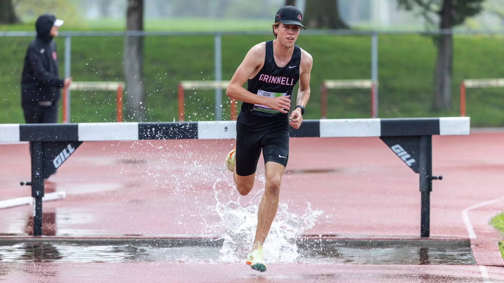
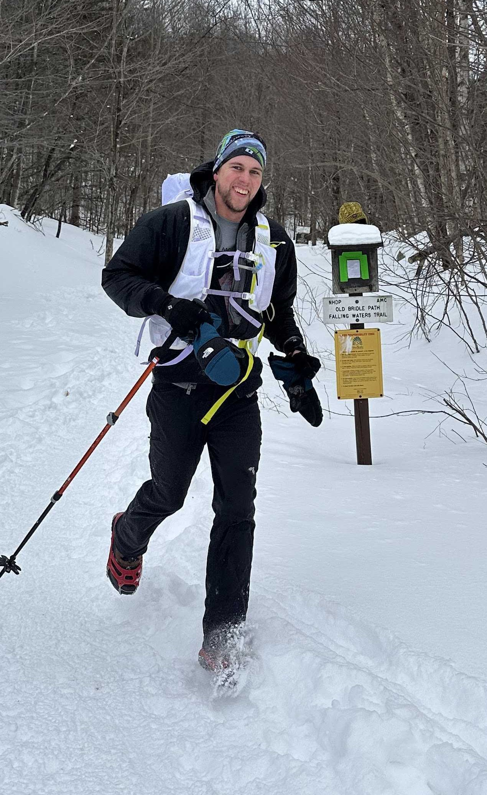

Hobbies & off-hours
When I'm not in the lab, I'm usually in motion, reading, or sleeping
(or doomscrolling but we don't talk about that here)
Running


Running a core part of my life and wellbeing, but is still relatively new for me. After starting track my senior year of high school, I competed in college, where I became a 7x Midwest Conference champion and set school records in multiple events. Since graduating, I've ran four marathons and started exploring trail running!
I find that running, especially when in nature, really clears my mind, lets me think deeply about issues, and has often led to new ideas for my work. Plus, having the objective metrics and data you can get from running is fascinating and really allows you to push yourself and improve.
Dancing
I co-led both the Grinnell Swing Society and Contra Dance Club in college, and I've been on MIT's ballroom dance team for the past year. I usually go line dancing two or three times a week somewhere in the city, which means that 6 out of 7 evenings I'm dancing.
If you don't dance I'd highly highly highly recommend trying it! Country Swing is good for really casual, fun, and cool-looking partner dancing but can be hard to find a group for and might not transfer well across locations. Contra is super easy since someone is calling out the moves, doesn't require a dedicated partner, and builds a great sense of community, but is also less common. Ballroom is a bit more of a commitment, and if you're competing can feel a bit more cerebral and restrictive than most types of dance. Line is what I'd recommend to most beginners since you can learn a choreography on your terms and just hop in! No partner, the dances are (relatively) standardized across the world, and there's different difficulty levels (and SOOOO many songs) so you can find something you like!

Reading
I love reading, especially when a book just pulls me in, which for me most often happens with Sci-Fi and Fantasy, but has occurred with most genres at one point or another. I am also very proud to be one of the last people on this planet who still uses a Nook. I would recommend, although I do live in perpetual fear that Barnes and Noble will go bankrupt and I'll lose all my books.
I hesitate to recommend books to strangers as I feel the recommendations need to be tailored, especially for such a large time commitment, but here are some of my favorite short stories (the first 3 are thematically similar):
Skiing

I'm a former ski instructor who now has to figure out how to pay for his own season pass...
I was on Indy last season, which has been wonderful, and I've loved how it encourages exploring. Usually, I'll stay my van overnight, which also means easy first chair without getting up early. Although my home mountains Loveland (CO) and Welch (MN) will always be my favorites, I really enjoyed discovering Magic Mountain (VT) and Mont Sutton (QB), which are both criminally underrated in my book.